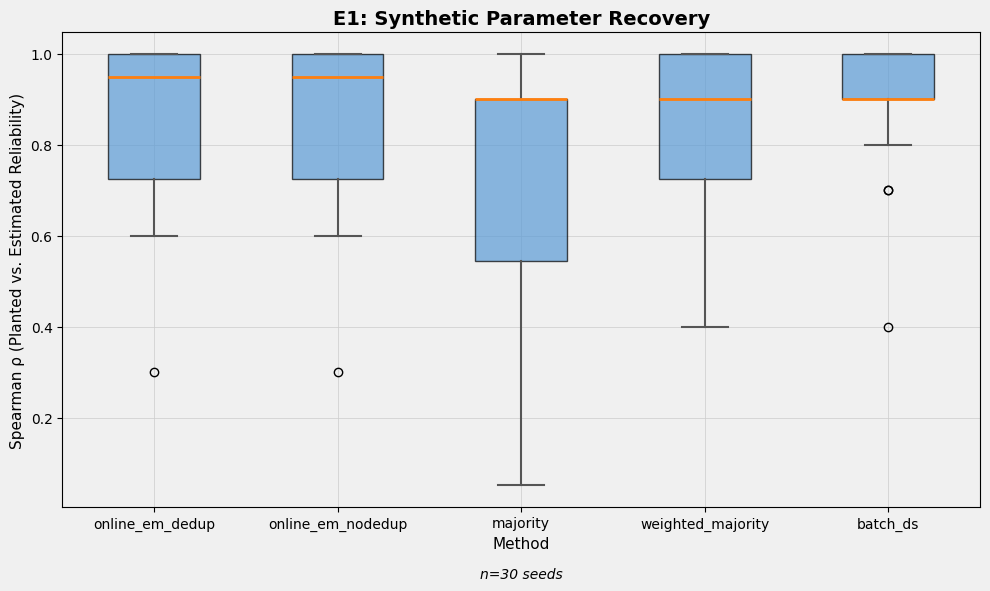
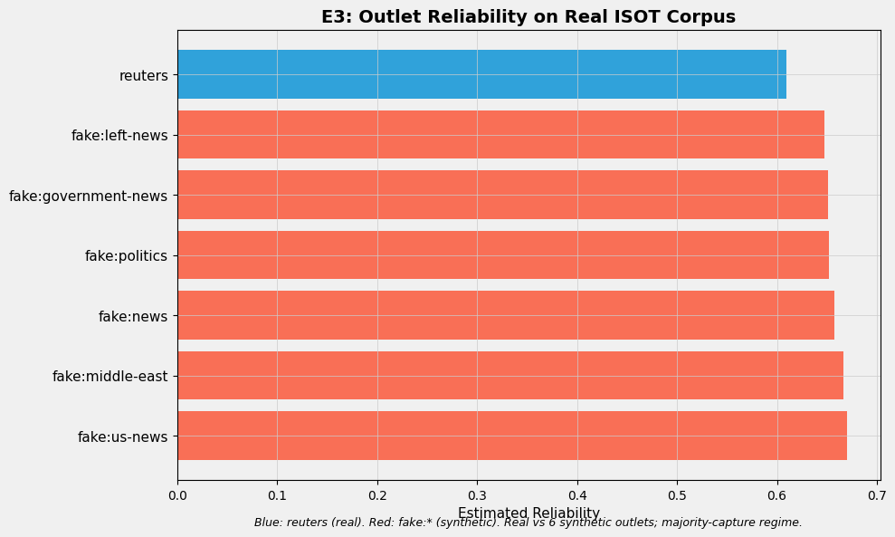
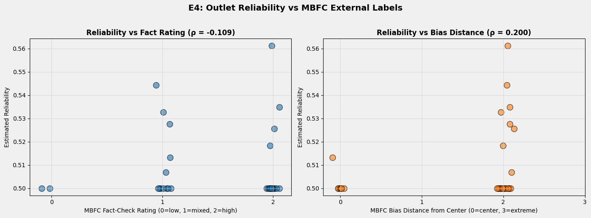

The estimator works on clean data, inverts predictably under syndication and unreliable majorities, and shows where the repair hierarchy stands.
Across 30 synthetic corpora with planted outlet reliability parameters, online EM recovers ground truth at mean ρ ≈ 0.88 — comparing favorably to batch Dawid-Skene (0.90), certainty-weighted majority (0.87), and especially plain majority vote (0.71). The streaming approximation introduces negligible loss.

When un-deduplicated wire copies are injected at multiplicity m ∈ {1, 2, 5, 10, 20} and re-attributed across outlets, recovery without deduplication degrades monotonically: ρ = 0.82 (m=1) → 0.73 (m=2) → 0.31 (m=10) → −0.87 (m=20). At high multiplicity the model ranks outlets backwards, having adopted the echoed unreliable wire account as consensus ground truth.
With fractional dedup voting enabled, recovery remains flat across the entire sweep (0.78–0.84). This isolates one mechanism of majority-capture — manufactured majorities from syndication — and shows it is fully repairable from data alone.
On the ISOT corpus (42,681 articles), one real outlet (Reuters) is structurally outnumbered by six synthetic fake sources. Reuters ranks 7th (last) by estimated reliability with AUC = 0.0: textbook majority-capture, exactly as the identifiability argument predicts. Dedup voting deflates the fake bloc's estimates (mean 0.83 → 0.67) but cannot reorder them — there is no information in the data to do so. This experiment shows the failure mode we cannot fix from data alone.

On FakeNewsNet's natural 2,531-domain corpus (341 outlets participating after an alignment upgrade), outlet consensus-agreement correlates negatively with held-out fact-checker labels: ρ = −0.16 (p = 0.003), binary AUC = 0.09. Domains carrying mostly-fabricated stories obtain higher consensus-agreement because fabricated celebrity stories are heavily co-covered — popularity masquerades as corroboration. This is the organic, in-the-wild counterpart of E3's designed inversion, and it is statistically significant.
Against Media Bias/Fact Check (MBFC) ratings, factuality correlation is null: ρ = −0.11 with bootstrap CI [−0.46, 0.24] (n=34 outlets). We tested whether claim-matching fidelity was the binding constraint by upgrading from frozen-vocab TF-IDF (cosine ≥ 0.55) to dual word + character-n-gram vectors plus entity-anchored blocking. Multi-outlet event coverage rose 23% (258 → 318 events; outlets scored 167 → 341) and made E3b's inversion reach significance, but manual audit found roughly 40% false merges at the operating threshold and the MBFC correlation remained null. Title-only claims with lexical matching sit below the fidelity this validation axis needs — the "voxelization" bottleneck dominates before the model can speak.

The estimator is sound. On synthetic data with known ground truth, EM recovery matches or beats supervised and unsupervised baselines. The model machinery is not the problem.
Consensus is not truth. Without an external anchor, fitted "reliability" is agreement-with-consensus by construction. Our three inversions are not bugs but the theorem manifesting. One failure mode (syndication) is fixable from data alone. The other (unreliable majorities) requires anchors or a fundamental rethink of what we're measuring.
Omission auditing is the honest product. We can reliably measure which outlets systematically omit claims the rest of the field corroborates, and which propagate claims nobody else carries — label-free and not served by supervised outlet classifiers.
{kind=link}
{kind=link}